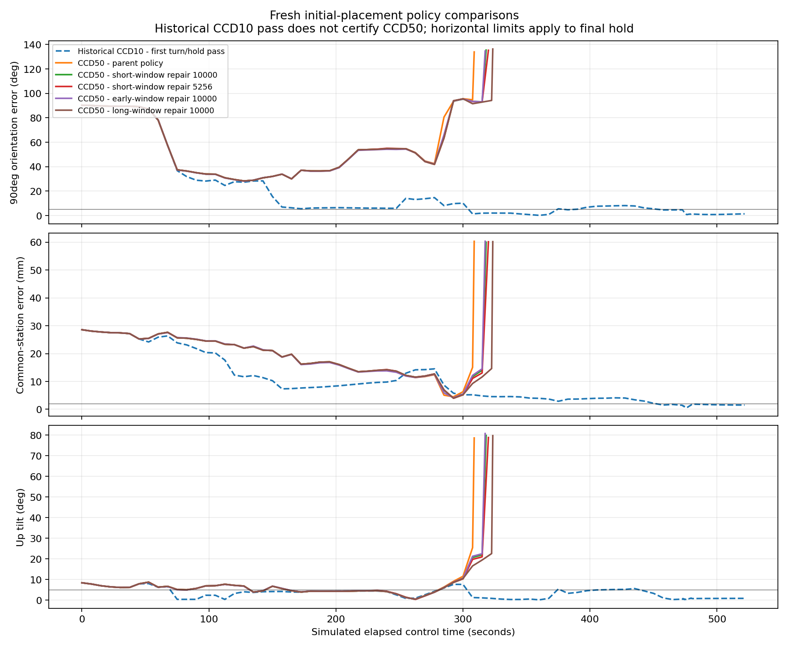

추가 확인: 관절 약0.6도 자극의 큐브 변화와 이미 저장한 약지4개 값. 세 모델 상태의96조건 비교이며 실물 평균 오차가 아니다. 보정폭만을 전체 실패의 주원인으로 단정하지 않는다.
전체 동작의 실물 준비 완료가 아니다. 접촉 계산10회에서 누락되던 얕은 접촉을50·100·200회에서 확인했다.50회 모델의 기존 정책은4118목표에서 중단됐고, 추가 SAC3만 스텝의 중간·최종 정책4개도 첫 회전·유지 미달이다. 이전 첫 회전 통과 결과는10회 모델의 기록이다. 모든 결과는 모델이며 장치를 열지 않았다.
추가 SAC의 완료 요청 분량 합계 30,000스텝. 학습 창 점수와 아래 독립 초기 배치 평가를 구분한다. 원본 정책과 실패 결과를 보존하고 자동 교체하지 않는다.
현재 정책의 제안 보정 범위는 기준 궤적 주변±0.01rad, 약±6.519틱이다. 실행 간격 최대2틱/75ms와는 다른 값이다. 세 번의 추가 학습과 네 정책 재시험을 통해 아직 이 구조로 회전·유지를 통과하지 못했다. 재사용 판정과 남은 준비.

점선은 과거10회 모델의 통과 기록이다. 그림은 저장 제어 주기 표본이며 실물 측정이나 모든1ms 상태의 인증이 아니다.
검증된 끝 자세 3개를 확보했다. 직접 초기화한 뒤 지탱하는 검사이며 도달 성공이 아니다. 현재 첫 회전 끝에서 새 경로1265목표는 큐브를 놓치지 않고 진행했지만 방향 오차15.94도와 약지 지지력 부족으로 미달이다.
실제 끝 상태를 이어 하중 인계 보정을 진행한다. 현재 자세에서 힘을 먼저 확보한 뒤 원래 방향으로 복귀하는 제어도 비교한다. 마지막 보고서 대기: 없음.
| 모델 제어 비교 | 목표 수 | 임시 약지 지지 | 종료 사유 |
|---|---|---|---|
| handoff_equilibrium1_feedback_v2 | 317 | 미달 | no_safe_two_tick_correction_found |
| handoff_equilibrium1_integer_start_v2 | 356 | 미달 | no_safe_two_tick_correction_found |
| handoff_integer_endpoint_close_v3 | 140 | 미달 | reference_progress_stalled |
| handoff_integer_endpoint_close_v4 | 189 | 미달 | offline_search_stop_requested |
| handoff_integer_endpoint_close_v5 | 270 | 미달 | offline_search_stop_requested |
| handoff_integer_load_first_v6 | 229 | 미달 | offline_search_stop_requested |
| handoff_integer_load_first_v7 | 170 | 미달 | no_safe_two_tick_correction_found |
| handoff_wrench_free_v1 | 157 | 미달 | no_safe_two_tick_correction_found |
| handoff_wrench_root_fixed_v1 | 411 | 미달 | no_safe_two_tick_correction_found |